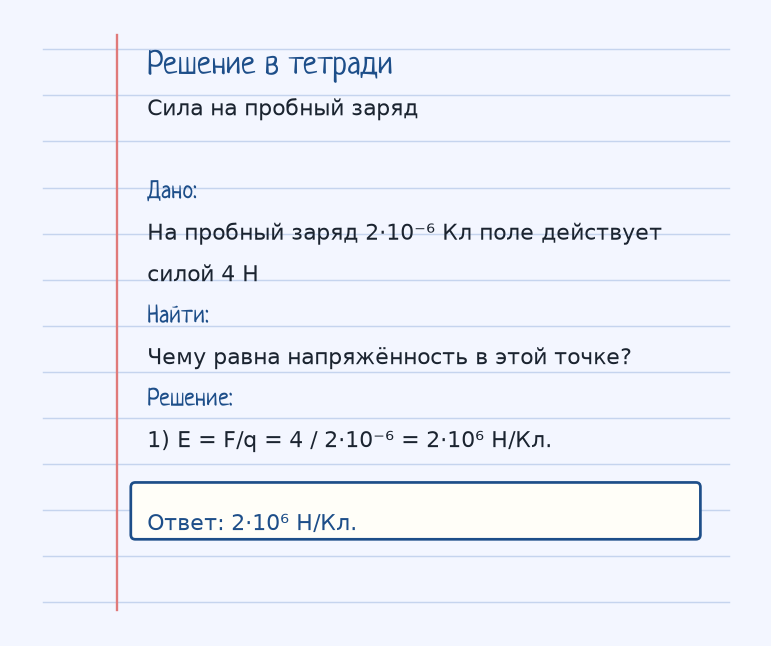
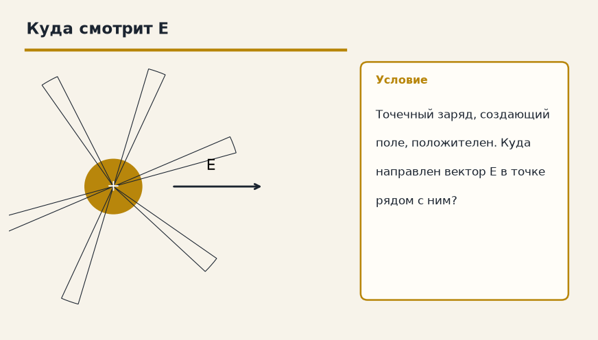

Найди, кто гонит заряд, и что ему мешает. Дальше — аккуратная арифметика, а не заклинание из букв. Ниже — как устроена тема «Напряженность электрического поля», где обычно спотыкаются, и два разбора до ответа.
Показ к теме. Это условие, не шпаргалка.
Сначала смысл
Силовая характеристика поля. Показывает, с какой силой поле действует на единичный положительный заряд.
Напряжённость E — сила, которая действовала бы на заряд +1 Кл, помещённый в эту точку. Поэтому E = F/q, где q — пробный заряд, а F — сила на него. Если поле создаёт точечный заряд Q, то E = k·Q/r², и от пробного заряда эта формула уже не зависит.
Вектор E направлен от положительного заряда и к отрицательному. Силовые линии рисуют в ту же сторону: куда поехал бы маленький плюс.
С расстоянием поле точечного заряда слабеет как 1/r², ровно как сила Кулона. Аналог из механики — g = 9,8 Н/кг: тоже «сила на единицу», только на килограмм массы.
Как решать. Выпиши величины с рисунка к примеру «Сила на пробный заряд». Условие: На пробный заряд 2·10⁻⁶ Кл поле действует силой 4 Н. Чему равна напряжённость в этой точке? Дальше подставляй их в формулу этой темы и сверяй шаги с решением под картинкой — оно закрыто, пока не попробуешь сам. Второй рисунок, «Куда смотрит E», тот же приём на других данных: Точечный заряд, создающий поле, положителен. Куда направлен вектор E в точке рядом с ним? Если оба примера сходятся, тему можно нести на контрольную.
Как читать формулу
E = F / q
E = k · Q / r²
Q — заряд, создающий поле.
E = F/q. Для точечного заряда E = k·Q/r². Q — заряд-источник.
Чтобы осталось в голове
Гравитационное поле Земли. Напряженность g = 9.8 Н/кг — это аналог E. Чем дальше от заряда, тем слабее поле (E падает как 1/r²).
g = 9,8 Н/кг показывает, какая сила тяжести приходится на 1 кг. E показывает, какая электрическая сила приходится на 1 Кл.
Где обычно спотыкаются
Не направляй E «куда попало». От плюса — наружу, к минусу — внутрь. И не путай Q, который создаёт поле, с q, на который поле действует.
Дальше две задачи. Сначала схема. Когда сам набросаешь ход, открой тетрадь — там дано, перевод в СИ, шаги и ответ в рамке.
Разбор 1
Сила на пробный заряд
На пробный заряд 2·10⁻⁶ Кл поле действует силой 4 Н. Чему равна напряжённость в этой точке?
На схеме только условие. Ответа там нет — его ещё надо получить.
Смотри на порядок, не на красивое число: сначала единицы, потом формула, потом ответ.
Дано. На пробный заряд 2·10⁻⁶ Кл поле действует силой 4 Н
В СИ.
Найти. Чему равна напряжённость в этой точке?
Решение.
E = F/q = 4 / 2·10⁻⁶ = 2·10⁶ Н/Кл.
2·10⁶ Н/Кл.

Разбор 2
Куда смотрит E
Точечный заряд, создающий поле, положителен. Куда направлен вектор E в точке рядом с ним?

На схеме только условие. Ответа там нет — его ещё надо получить.
Смотри на порядок, не на красивое число: сначала единицы, потом формула, потом ответ.
Дано. Точечный заряд, создающий поле, положителен
В СИ.
Найти. Куда направлен вектор E в точке рядом с ним?